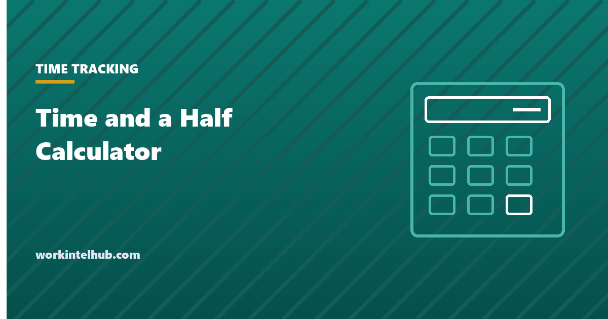

Time and a Half Calculator

Time and a half is one and a half times the regular hourly rate, and double time is twice it. Which hours attract each rate depends on the law that applies: federal law uses a weekly threshold only, and a few states, California most prominently, add daily thresholds and a seventh-day rule.
The calculator handles both, and a manual mode for when you already know the hours. Below it: what the rates apply to, why "time and a half on holidays" is a policy rather than a law, and the bonus rule that makes the true rate higher than the hourly wage.
Time and a half and double time calculator
| Day | Hours | Regular | 1.5x | 2x |
|---|
Seven consecutive days in one workweek: the seventh day's first 8 hours are 1.5x and hours after 8 are 2x.
Time and a half is 1.5 times the regular rate. Under federal law the regular rate includes nondiscretionary bonuses and shift differentials; if those apply, use the overtime calculator, which builds the rate correctly. This page uses the hourly rate you enter.
Which hours get which rate
| Rule | 1.5x applies to | 2x applies to |
|---|---|---|
| Federal (29 U.S.C. 207) | Hours over 40 in the workweek | Never required |
| California (California Labor Code 510) | Hours over 8 in a day, over 40 in a week, and the first 8 hours on the seventh consecutive day of a workweek | Hours over 12 in a day, and hours over 8 on that seventh day |
| Alaska, Nevada, Colorado | Daily thresholds apply (8 in Alaska and Nevada, 12 in Colorado), with conditions | Not required by statute |
| Most other states | Federal rule | Never required |
Two points the table hides. Federal law has no double time at all; where it appears it is a contract or policy term. And California's daily and weekly rules do not stack: hours already paid at 1.5x because the day exceeded 8 are not counted again toward the weekly 40. The calculator's California mode applies that rule.
Holidays, weekends and nights
No federal law requires premium pay for working a holiday, a weekend or a night. Time and a half on Thanksgiving is a policy or a union term, not a statute, and an employer that offers it can withdraw it with notice unless a contract says otherwise. What the law does require is that if premium pay is promised, it is paid, and that the hours still count toward the weekly overtime threshold. Our page on federal holidays and holiday pay covers the rules in detail, and the shift differential entry covers night premiums.
The rate is not always the hourly wage
Federal overtime is 1.5 times the regular rate, which is total pay for the week divided by hours worked, and total pay includes nondiscretionary bonuses, commissions and shift differentials. An employee on $22 an hour who earned a $100 attendance bonus in a 46-hour week has a regular rate of $24.17, not $22, and the overtime premium is calculated on that. The calculator on this page uses the hourly rate you enter, which is correct only when there are no such additions. When there are, the overtime calculator builds the regular rate properly. Since 2025 the federal overtime premium is also partly deductible for the employee; the no-tax-on-overtime calculator works out how much.
Key takeaways
- Time and a half is 1.5 times the regular rate; double time is 2 times. Federal law requires only the first, for hours over 40 a week.
- California adds daily thresholds: 1.5x over 8 hours, 2x over 12, and special rates on the seventh consecutive day. Daily and weekly rules do not stack.
- No federal law requires premium pay for holidays, weekends or nights. Where it exists it is policy or contract.
- The regular rate includes nondiscretionary bonuses and differentials, so the true overtime rate is often higher than 1.5 times the hourly wage.
Frequently asked questions
How do I calculate time and a half?
Multiply the regular hourly rate by 1.5, then by the number of overtime hours. At $22 an hour, time and a half is $33, and six overtime hours are $198 on top of regular pay. Under federal law the regular rate includes nondiscretionary bonuses, which raises the figure.
What is double time pay?
Twice the regular rate. Federal law never requires it. California requires it for hours over 12 in a day and for hours over 8 on the seventh consecutive day of a workweek. Elsewhere it appears only in contracts and policies.
Is time and a half required on holidays?
Not by federal law, and not by most state laws. Premium holiday pay is a policy or union term. The hours worked on a holiday do count toward the 40-hour weekly threshold like any other hours.
What is time and a half of $20?
$30 an hour. Double time of $20 is $40. Multiply by the number of hours at each rate to get the premium pay.
When does California pay double time?
After 12 hours in a single workday, and after 8 hours on the seventh consecutive day worked in one workweek. The first 8 hours of that seventh day and hours between 8 and 12 on any day are time and a half.
Does overtime start after 8 hours a day?
Under federal law no; it starts after 40 hours in the workweek regardless of daily hours. California, Alaska, Nevada and Colorado have daily thresholds with their own conditions. Check the state rule before assuming either.